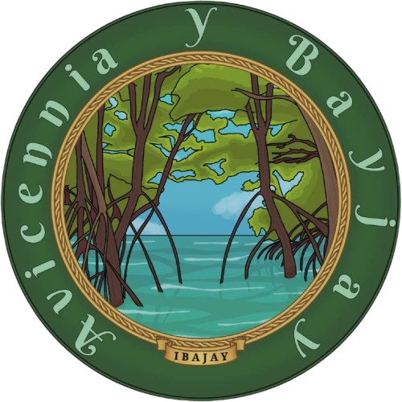
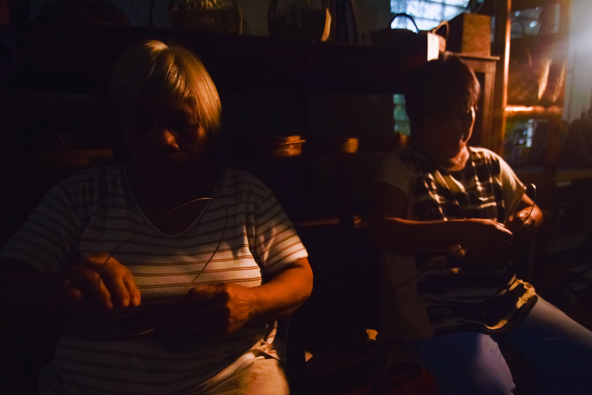
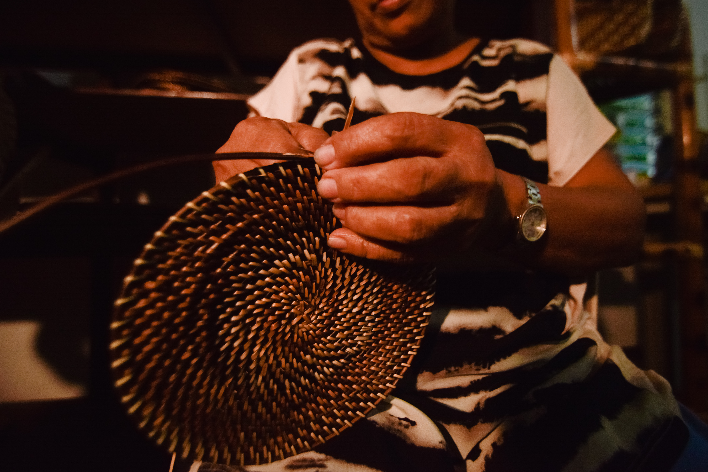
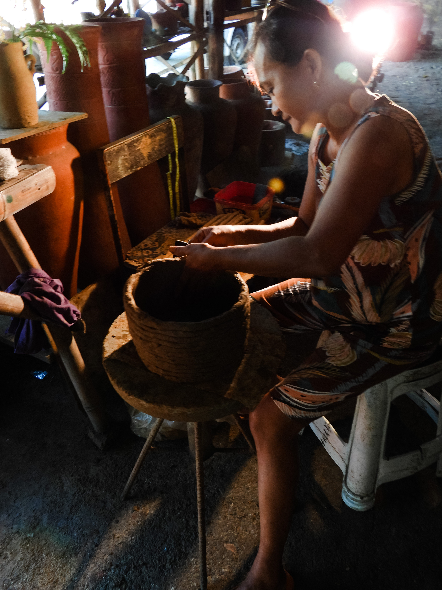

Loading...



Paradise in Seclusion
Tucked away from the crowds, Ibajay is where untouched nature, rich culture, and warm hospitality create the perfect escape.

Threads of Tradition
Weaving in Ibajay is a cultural practice shaped by generations of craftsmanship and tradition. Using nito vines and abaca fibers, artisans create functional and decorative products that reflect skill, patience, and creativity.
Rooted in local heritage, each woven piece highlights the community’s connection to nature and sustainable living. These handcrafted works preserve traditional techniques while continuing to serve everyday use and cultural expression.


Nature To Craft
From forest vines and plant fibers to hand-shaped clay, explore Ibajay’s rich tradition of nito, abaca, and pottery. Each creation embodies sustainability, heritage, and the skill of dedicated artisans.
Rooted in Ibajay’s close relationship with its natural environment, local artisans turn raw materials like forest vines, plant fibers, and clay into meaningful creations. From nito weaving and abaca processing to handmade pottery, these crafts reflect a lifestyle shaped by sustainability, creativity, and respect for the land that sustains the community.

Bibingka
A traditional Filipino rice cake made from rice flour and coconut milk, typically baked in clay pots lined with banana leaves. Soft, slightly sweet, and often topped with butter, cheese, or salted egg, bibingka is commonly enjoyed during festive seasons and special gatherings.
Pinais
A coastal delicacy made by wrapping rice, coconut milk, and sometimes fish or meat in banana leaves, then slow-cooking it over heat. The result is a fragrant, savory dish where the natural aroma of banana leaves enhances its rich, comforting flavor.
Puto sa Bagoe
A soft, steamed rice cake variation known for its fluffy texture and subtle sweetness. “Sa Bagoe” refers to its local style of preparation, often using traditional molds and serving methods, making it a simple yet nostalgic Filipino snack.
Huwad - Huwad
A locally inspired delicacy or plant-based food item often associated with rural culinary traditions. It highlights natural ingredients and traditional preparation methods, reflecting the community’s connection to native plants and seasonal harvesting practices.
Celebrated every January, the Ati-Atihan Festival of Ibajay is a vibrant expression of faith, culture, and unity. It brings the community to life with energetic performances, colorful traditions, and a deep connection to heritage.
Watch groups perform synchronized routines in striking tribal-inspired costumes, moving to the beat of drums.
Feel the pulse of the festival through powerful rhythms echoing across the streets.
Witness solemn yet beautiful parades honoring the Santo Niño, blending devotion with tradition.
See the town come together in vibrant processions filled with color, creativity, and pride.
Originally one of the earliest settlements in Aklan, Ibajay traces its roots to pre-colonial times when it thrived as a coastal community rich in natural resources. It became an organized town under Spanish rule around 1673, gradually developing into a center of agriculture, trade, and local governance. Over time, parts of its territory, including Nabas, were separated to form independent municipalities as the population and economy expanded.
Culturally, Ibajay shares in the vibrant spirit of the Ati-Atihan Festival, reflecting deep-rooted traditions of faith, unity, and celebration. The town continues to honor its heritage through local festivities and community gatherings that highlight the identity and resilience of its people.
Ibajay is also known for its rich natural and cultural attractions, including the Katunggan it Ibajay, one of the largest mangrove eco-parks in the region, as well as scenic rivers, beaches, and upland landscapes. These destinations showcase the town’s commitment to environmental preservation and sustainable tourism.
Historically, Ibajay has been a hub of traditional craftsmanship. Local industries such as nito weaving, abaca fiber production, and pottery have been passed down through generations, producing handmade goods that reflect both functionality and artistry. These products remain an important part of the local economy and cultural identity.
Today, Ibajay stands as a municipality that balances heritage and progress—preserving its traditions while embracing development. Known for its warm community, cultural richness, and natural beauty, it continues to live up to its identity as a “Paradise in Seclusion.”
Welcome to Avicennia Y Bayjay — a culture-based food business inspired by the rich heritage, local flavors, and natural beauty of Ibajay, Aklan. From authentic delicacies to locally inspired drinks, we aim to give you a warm and meaningful taste of Ibajay’s culture. Rooted in tradition and creativity, our goal is to celebrate and promote the identity of Ibajay through affordable, high-quality, and memorable food experiences.
Join us at the 2026 Exposition and experience the culture, flavors, and creativity of Ibajay, Aklan. Open to tourists, locals, students, and educators, this event brings the heart of Ibajay to STI College Kalibo through a thoughtfully curated showcase of its identity and heritage. Discover authentic Ibajay cuisine, explore locally made woven crafts and pottery, and witness a live cultural dance presentation that highlights the energy, artistry, and traditions of the community. This exposition celebrates the rich culture, creativity, and pride of Ibajay.